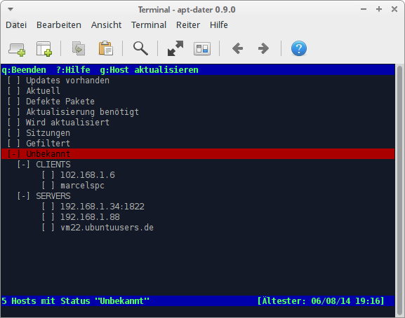

apt-dater
Dieser Artikel wurde für die folgenden Ubuntu-Versionen getestet:
Ubuntu 14.04 Trusty Tahr
Zum Verständnis dieses Artikels sind folgende Seiten hilfreich:
 apt-dater
apt-dater  ist ein Kommandozeilenwerkzeug, mit dem Updates auf einer größeren Anzahl von Hosts verteilt und die Installation zentral gesteuert werden können. Zu Beginn wird ein zentrales System definiert (der "Server"), das sämtliche Statusmeldungen der Clients sammelt und darstellt. Die Kommunikation erfolgt über SSH mittels Key-Authentification, eine entsprechende Einrichtung der Clients ist daher Voraussetzung.
ist ein Kommandozeilenwerkzeug, mit dem Updates auf einer größeren Anzahl von Hosts verteilt und die Installation zentral gesteuert werden können. Zu Beginn wird ein zentrales System definiert (der "Server"), das sämtliche Statusmeldungen der Clients sammelt und darstellt. Die Kommunikation erfolgt über SSH mittels Key-Authentification, eine entsprechende Einrichtung der Clients ist daher Voraussetzung.
Voraussetzungen¶
Um mit apt-dater arbeiten zu können, muss der Host mittels eines definierten Benutzers via SSH auf den Client ohne Passwortauthentifizierung zugreifen können. Die Methode zur Umsetzung wird in einem eigenen Artikel beschrieben und soll hier nicht Thema sein: SSH-Authentifizierung über Public Keys.
Installation¶
Das Programm ist nicht in der Standardinstallation enthalten und kann über folgende Pakete installiert werden. Dabei werden auf den Clients andere Pakete benötigt als auf dem Server:
apt-dater-host
 mit apturl
mit apturl
Paketliste zum Kopieren:
sudo apt-get install apt-dater-host
sudo aptitude install apt-dater-host
Auf dem später als Server dienenden System (von dem aus die Updates zu verwalten sind) werden hingegen folgende Pakete benötigt:
apt-dater
mit apturl
Paketliste zum Kopieren:
sudo apt-get install apt-dater
sudo aptitude install apt-dater
Konfiguration¶
Nachfolgend wird der Benutzer, mit dem apt-dater auf einen Client zugreift, monitor genannt.
Client¶
Da Standardbenutzer nicht die Berechtigung zur Ausführung von apt-get besitzen und auch nicht mittels root verbunden werden soll, muss dem Benutzer monitor explizit die Berechtigung dazu gegeben werden.
Zu diesem Zweck muss die Datei /etc/sudoers über visudo bearbeitet werden.
sudo visudo
Hier ist folgende Zeile hinzuzufügen:
1 2 | # User privilege specification monitor ALL=NOPASSWD: /usr/bin/aptitude, /usr/bin/apt-get |
Dieser Schritt muss auf allen späteren Clients wiederholt werden.
Server¶
Auf der Konsole ist apt-dater zu starten. Dabei werden beim ersten Start die Konfigurationsdateien initialisiert.
sudo apt-dater
Alle Clients müssen in der Konfigurationsdatei des apt-daters eingetragen werden. Diese befindet sich im Benutzerverzeichnis, da apt-dater mittels sudo gestartet worden ist. Soll dagegen apt-dater später als normaler Benutzer ausgeführt werden, sollte zum entsprechenden Benutzer gewechselt werden.
Die Syntax der Datei /root/.config/apt-dater/hosts.conf ist sehr einfach und setzt sich aus folgenden Komponenten zusammen:
1 2 | # [Customer Name] # Hosts=([OptionalUser@]host.domain[:OptionalPort];)* |
| Argumente | |
| BEFEHL | Bedeutung |
[Customer Name] | Ein selbstdefinierter Name für die Gruppe. Passend wäre beispielsweise [SERVERS] oder [DAHEIM]. |
Hosts= | Hier beginnt die Auflistung der Hosts, die sich in einer bestimmten Gruppe befinden. Jeder Eintrag eines Hosts wird abgeschlossen durch ein Semikolon. |
OptionalUser | Der Benutzer, mit dem apt-dater auf den Host zugreifen soll, im Beispiel also monitor. Falls mit demselbem Benutzer zugegriffen wird, mit dem auch apt-dater läuft, kann dieser Eintrag weggelassen werden (nicht empfohlen). |
host.domain | IP-Adresse oder vollständiger Hostname. |
OptionalPort | Ein optionaler SSH-Port, falls das Zielsystem nicht auf Port 22 erreichbar ist. |
Zur besseren Verständlichkeit hier eine Beispielkonfiguration:
# Syntax: # # [Customer Name] # Hosts=([OptionalUser@]host.domain[:OptionalPort];)* # [SERVERS] Hosts=monitor@192.168.1.88;monitor@vm22.ubuntuusers.de;monitor@192.168.1.34:1822; [Clients] Hosts=monitor@marcelspc;monitor@102.168.1.6;
Bedienung¶
Direkt nach der Installation und mit der angegebenen Beispielkonfiguration stellt sich apt-dater folgendermaßen dar:

Mittels der Pfeiltasten kann nun im Baum navigiert werden. Sind ein einzelner Host oder eine Gruppe markiert, werden oben die verfügbaren Befehle angezeigt. Im obigen Bild könnten alle Hosts mit dem Status "Unbekannt" aktualisiert werden.
Eine Auflistung der einzelnen Befehle sowie der Meldungen kann mittels ? angezeigt werden.
Unbekannt sind alle Hosts, die erst hinzugefügt und noch nicht aktualisiert worden sind, jedoch ohne Hosts, zu denen der Server keine Verbindung hat aufbauen können.
 Übersichtsartikel
Übersichtsartikel- Erstellt mit Inyoka
-
 2004 – 2017 ubuntuusers.de • Einige Rechte vorbehalten
2004 – 2017 ubuntuusers.de • Einige Rechte vorbehalten
Lizenz • Kontakt • Datenschutz • Impressum • Serverstatus -
Serverhousing gespendet von